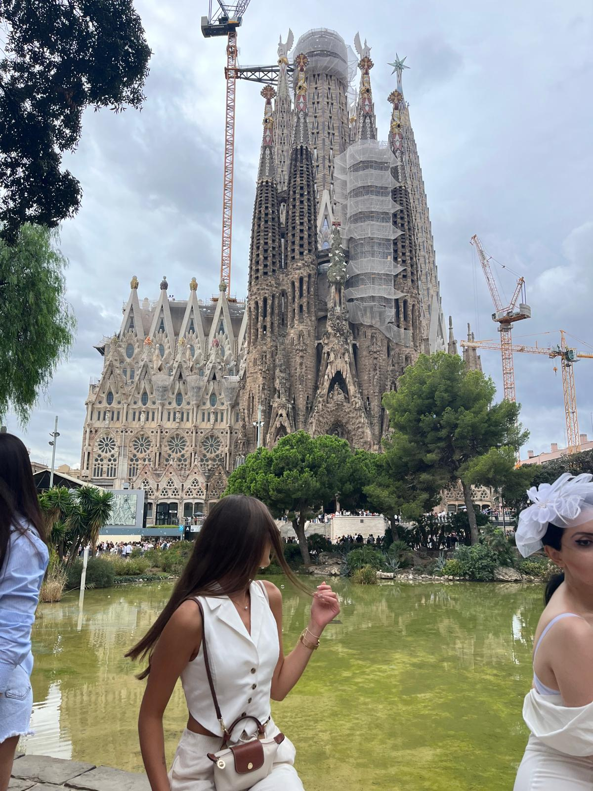
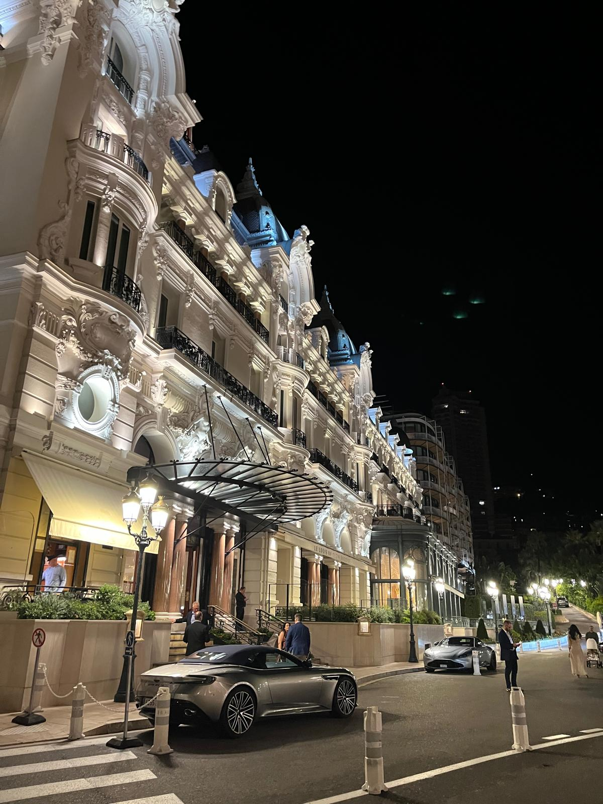
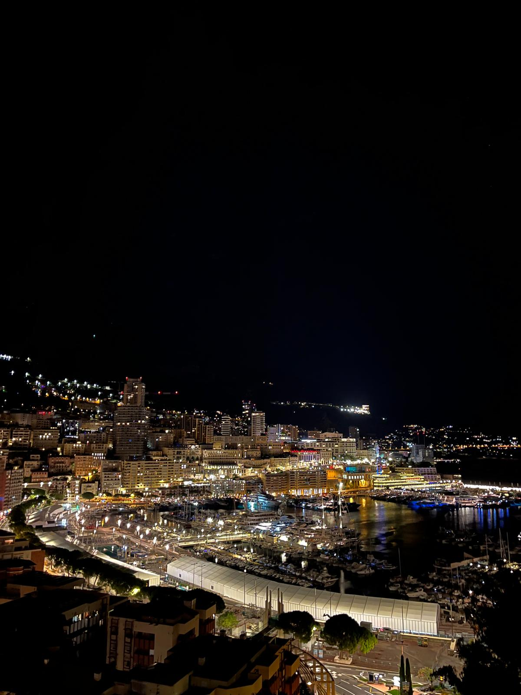

Zovem se Ana Ćesić i rođena sam 27. srpnja 2006. godine u Splitu. Dolazim iz malog, ali prekrasnog mjesta u Hercegovini koje se zove Posušje. Od malih nogu volim kreativnost i umjetnost, a kroz godine sam se razvijala u različitim smjerovima. Završila sam osnovnu glazbenu školu, smjer klavir, što mi je omogućilo da razvijem disciplinu, strpljenje i ljubav prema glazbi. Također sam trenirala košarku, što mi je pomoglo da izgradim timski duh, upornost i fizičku snagu. Od hobija i interesa, najviše me privlače arhitektura, interijer i grafički dizajn. Uvijek me fascinira kako prostor može biti uređen da bude funkcionalan, lijep i ugodan, te kako dizajn može prenijeti emocije i priču.
  Video koji me inspirira za grafički dizajn: YouTube video